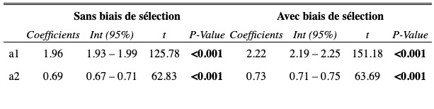
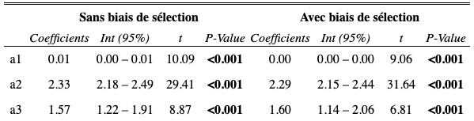
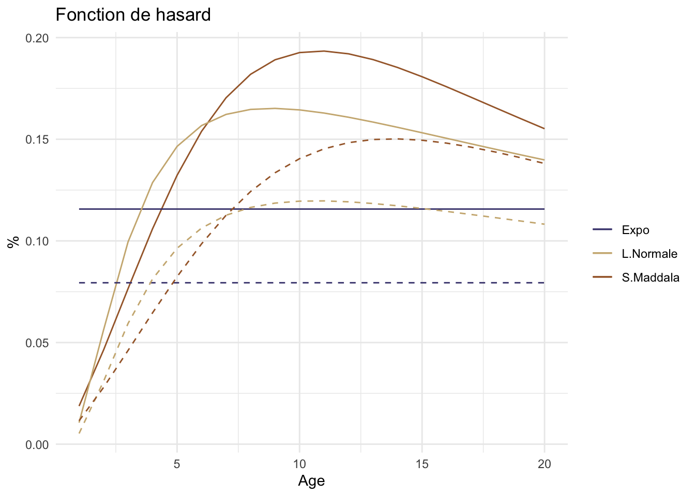

Chapter 3 Mieux comprendre les modèles de durée
3.1 Description des données
Le base de données que nous avons à disposition contient des informations sur 3710 brevets actifs entre 1990 et 2000. Cette base de données a été constituée à partir du stock de brevets actifs en 1990 et est exhaustive pour tous les brevets déposés entre 1990 et 2000.
Les informations a notre disposition sont les suivantes :
le numéro de dossier du brevet
la date de dépôt
la date de dernière nouvelle (date d’abandon ou non)
le statut du brevet :
| Statut | Nb de brevets | Pourcentage |
|---|---|---|
| EXP : expiré | 125 | 3,3 |
| ABD : abandonné | 2016 | 54,3 |
| CEDE : cédé | 16 | 0,4 |
| ACT : actif | 1553 | 41,8 |
- la direction opérationnelle à laquelle appartient le brevet
Directions Nb de brevets Pourcentage DAM 525 14,15 DCC 518 14,1 DSV 109 2,9 DRN 327 8,8 DTA 1530 41,2 INSTN 2 0,05 IPSN 1,9 DG 10 0,3 autre (non classé) 408 11
Notre but compte tenu des informations à notre disposition est de pouvoir estimer la durée de vie des brevets et ainsi avoir des renseignements sur leur valeur. Nous avons ici à faire avec des données de durées. Ce type de données présente des spécificités du fait que l’on étudie une caractéristique acquise au cours du temps : il faudra situer les événements dans le temps et non pas simplement regarder si le brevet a été abandonné ou non durant la période de l’observation. Les études de survie sont un type d’étude utilisant des méthodes d’analyses particulières. Ces méthodes vont permettre d’étudier le délai de survenue d’un événement. Dans notre cas, l’objectif va être de déterminer à quel âge un brevet arrêtera d’être renouvelé.
Avant de procéder aux estimations, nous allons nous intéresser aux spécificités de notre base de données. Nous allons nous intéresser à la collecte des données afin d’identifier les éventuels “problèmes” d’échantillonnage et de manque d’information. Tous ces renseignements seront utiles afin de pouvoir correctement construire notre modèle statistique de durée de vie et obtenir les meilleures estimations possibles.
Echantillonnage de la BDD : données tronquées
Notre base de données contient tous les brevets devenus actifs entre 1990 et 2000. De plus, de par l’échantillonnage de stock, elle contient tous les brevets actifs en 1990. Ces derniers ont donc été déposés entre 1970 et 1989 car on rappelle que la durée maximale légale d’un brevet est de 20 ans. Tous les brevets déposés et abandonnés avant 1989 ne sont pas présents dans la base de données. Seuls les brevets déposés avant 1989 et toujours actifs en 1990 sont recensés. On est donc dans une situation de troncature car tous les brevets non renouvelés jusqu’en 1989 ne sont pas recensés. On a donc dans ce cas, une surestimation des durées de vie car les brevets présents ont tendance à être des brevets longs.
Pour ce faire, notre devons prendre en compte cet effet de biais d’échantillonnage sur le stock initial au moment de nos estimations pour les brevets ayant été déposés avant 1990 afin de ne pas biaiser nos résultats.
Informations incomplètes de la BDD : données censurées
L’information est incomplète pour certains brevets. En effet, à l’année 2000 (date de fin de l’étude), certains des brevets sont toujours actifs. Pour ceux là, nous n’avons toujours pas observé l’évènement d’intérêt qui correspond à l’abandon du brevet. Dans ces cas là la durée observée entre la date de dépôt et l’année de fin de suivi n’est pas appelée durée de vie du brevet mais l’on parle plutôt d’une ancienneté. En effet, comme l’on ne connaît pas la date d’abandon du brevet, on parle d’une ancienneté (ancienneté qui est plus courte que la durée de vie totale). Nous sommes dans le cas de brevets censurés à droite.
Pour ce faire, pour les brevets abandonnés après 2000, nous devons prendre en compte cette censure à droite pour faire nos estimations.
De plus, on observe un deuxième cas de censure à droite lié au fait que la durée de vie des brevets est contrainte à 20 ans. Les brevets ayant atteint la durée maximale légale devront eux aussi être traités différemment.
Après avoir recensé les différentes situations présentes dans la base de données, nous allons représenter ces cas et voir quelle est la proportion de brevets se trouvant dans ces différents cas.
Synthèse des cas de la BDD
Nous allons tout d’abord commencer par une représentation graphique des cas afin de mieux fixer les idées.| Cas | Durée de vie | Effectifs | Part en % |
|---|---|---|---|
| Brevets déposés après 1990 et abandonnés avant 2000 | connue | 570 | 12,9 |
| Brevets déposés après 1990 et abandonnés après 2000 | inconnue (ancienneté) | 1262 | 35.6 |
| Brevets déposés avant 1990 et abandonnés avant 2000 | connue | 1441 | 42,3 |
| Brevets déposés avant 1990 qui ont atteint l’âge maximal légal avant 2000 | maximale | 117 | 3 |
| Brevets déposés avant 1990 et abandonnés après 2000 | inconnue (ancienneté) | 201 | 6,2 |
| Brevets déposés avant 1990 qui ont atteints l’âge maximal légal en 2000 | maximale | 8 | 3 |
Table : Effectifs et parts des brevets4
Une fois les différents problèmes identifiés nous allons pouvoir passer aux estimations. Pour ce faire, nous allons faire : - une estimation semi paramétrique à l’aide du package survival - une estimation non paramétrique à l’aide du package survival - une estimation paramétrique en construisant la vraisemblance “à la main” afin de prendre en compte les spécificités de notre jeu de données. La log-vraisemblance sera par la suite maximisée grâce au package maxLik
3.2 Fonctions utiles
3.2.1 Fonction de survie
La fonction de survie est, pour \(t\) fixé, la probabilité de survivre jusqu’à l’instant \(t\), c’est-à-dire :
\[ S(t) = \mathbb{P}(\mathbb{X} > t), t \geqslant 0 \]
3.2.2 Fonction de répartition
La fonction de répartition(ou c.d.f pour “cumulative distribution function” ou courbe cumulée des évènements en fonction du temps) représente, pour \(t\) fixé,la probabilité de mourir avant l’instant \(t\),c’est-à-dire
\[F(t) = \mathbb{P}(\mathbb{X} \leqslant t) = 1 - S(t)\]
Remarque : le signe d’inégalité stricte ou pas n’a aucune importance quand la loi \(\mathbb{X}\) est continue mais lorsque l’on a des sauts (temps discret) il est donc important de faire la précision inférieure ou égale.
3.2.3 Risque instantané \(\lambda\) ou taux de hasard :
Le risque instantané ou taux d’incidence, pour \(t\) fixé caractérise la probabilité de mourir dans un petit intervalle de temps après \(t\), conditionnellement au fait d’avoir survécu jusqu’au temps \(t\) c’est-à-dire le risque de mort instantané pour ceux qui ont survécu :
\[ \lambda(t) = \frac{f(t)}{S(t)} = ln(S(t))^{'}\]
Taux de hasard cumulé \(\varLambda\) correspond à l’intégrale du risque instantané \(\lambda\):
\[ \varLambda(t) = \int_{0}^{t} \lambda(u)du = -ln(S(t))\]
On peut en déduire de cette expression l’équation de la fonction de survie en fonction du taux de hasard cumulé (ou risque instantané) :
\[ S(t) = exp(-\varLambda(t)) = exp(-\int_{0}^{t} \lambda(u)du)\]
Ce qui donne
\[ f(t) = \lambda(t)exp(-\int_{0}^{t} \lambda(u)du)\]
3.2.4 Moyenne, variance et quantile de la durée de vie:
- Temps moyen de survie \(\mathbb{E}= \int_{0}^{\inf} S(t)dt\)
- Variance de la durée de survie \(\mathbb{V}(X) = 2\int_{0}^{\inf} tS(t)dt - (\mathbb{E(X)})^{2}\)
- Fonction quantile de la durée de survie \(q(p) = F^{-1}(p) = S^{1}(1-p), 0 < p < 1\), le quantile \(q(p)\) est le temps où une proportion \(p\) de la population a disparu.
3.3 Estimation semi-paramétrique
3.3.1 Modèle de hasards proportionnels
L’objectif principal est d’évaluer l’effet de covariables sur la durée de vie.
Comme il y a des facteurs X de types binaires, qualitatifs ou quantitatifs et éventuellement des facteurs ayant la notion d’âge, alors il serait intéressant de mettre en place un raisonnement valable en multivarié qui nous permettrait d’obtenir des rapports de risques instantanés (Hazard ratio).
Modèle générale :
\[ \lambda(t | Z) = \lambda_{0}(t)h(\beta,Z)\]
Avec :
- Z : vecteur de covariables
- \(\beta\) : paramètre d’intérêt
- h : fonction positive
Idée de Cox :
- Estimer la fonction \(h(t)\) sur l’échantillon
- Vérifier l’existence d’un risque proportionnelle c’est-à-dire quels que soient deux individus \(i\) et \(j\) qui ont pour covariables \(Z_i\) et \(Z_j\) ; le rapport des fonctions de hasard ne varie pas au cours du temps
- Chercher à estimer le hazard ratio, soit le coefficient multiplicateur de \(h(t)\)
3.3.2 Modèle de Larmarange (n.d.)
Un cas particulier très important est le modèle de Cox, qui suppose que la fonction \(h\) est la fonction exponentielle, c’est-à-dire,
\[\lambda(t | Z) = \lambda_{0}(t) exp(\beta^{'},Z)\]
L’estimation du coefficient de régression de \(\beta\) se ferait à l’aide d’une technique de vraisemblance partielle de Cox c’est-à-dire que les estimations se feront conditionnellement à l’ensemble des instants où un décès a lieu.
3.3.2.1 Modélisation
Nous allons réaliser l’estimation des coefficients selon le modèle de Cox en régressant la fonction de survie selon les différents domaines d’exploitation des brevets au sein de l’entreprise.
Le résumé de cette regression est comme suit :
## Call:
## coxph(formula = ft_survie ~ do, data = brevet, x = TRUE, y = TRUE)
##
## coef exp(coef) se(coef) z p
## doDAM -0.02983 0.97061 0.07637 -0.391 0.69612
## doDCC -0.74661 0.47397 0.08223 -9.080 < 2e-16
## doDG 0.45421 1.57492 0.33764 1.345 0.17854
## doDRN -0.48282 0.61704 0.08493 -5.685 1.31e-08
## doDSM -0.03158 0.96891 0.10453 -0.302 0.76257
## doDSV 0.41408 1.51298 0.15009 2.759 0.00580
## doDTA -0.14790 0.86252 0.06552 -2.257 0.02398
## doINSTN 0.50285 1.65342 0.70917 0.709 0.47829
## doIPSN -0.37465 0.68753 0.14494 -2.585 0.00974
## doTECHNICATOME -0.42695 0.65250 0.16691 -2.558 0.01053
##
## Likelihood ratio test=156.6 on 10 df, p=< 2.2e-16
## n= 3615, number of events= 2152Suite à cette estimation, nous obtenons le tableau suivant représentant les différents taux de hazard.
Table : Taux de hazard proportionnel de Cox
Ainsi, nous obtenons aussi les coefficients conditionnels estimés du modèle de régression.
| x | |
|---|---|
| doDAM | -0.0298265 |
| doDCC | -0.7466084 |
| doDG | 0.4542064 |
| doDRN | -0.4828221 |
| doDSM | -0.0315804 |
| doDSV | 0.4140845 |
| doDTA | -0.1478985 |
| doINSTN | 0.5028465 |
| doIPSN | -0.3746475 |
| doTECHNICATOME | -0.4269455 |
Table : Coefficients conditionnels estimés du modèle de Cox
Figure : Représenation graphiques des fonctions de survie conditionnelles estimées par le modèle de Cox
3.3.2.2 Verification de la validité du modèle :
Afin de compléter cette modélisation, il est nécessaire de réaliser un test d’hypothèse ainsi qu’une analyse de la distribution des résidus.
- Test d’hypothese :
## chisq df p
## do 148 10 <2e-16
## GLOBAL 148 10 <2e-16Nous remarquons que notre modèle est significatif.
- Distribution des résidus de Schoenfeld :
Cette analyse permet d’observer la répartition des résidus au cours du temps. Nous constatons que la distribution des résidus ne change pas au cours du temps.
Figure : Représentation de la distribution des résidus de Schoenfeld
3.4 Estimation non paramétrique
L’estimateur de Kaplan-Meier, aussi connu sous le nom de l’estimateur produit limite est utilisé pour estimer la fonction de survie à partir des données de durées de vie. Il est proposé par Kaplan en 1958. L’estimateur de Kaplan-Meier est donc l’estimateur du maximum de vraisemblance non-paramétrique de \(S(t)\). Son expression est :
\[\hat S(t) = P(T > t) = \prod_{t_i > t} \bigg[1-\frac{d_i}{n_i} \bigg]\]
\(d_i\) représente le nombre de décès au temps \(t_i\) et \(n_i\) le nombre d’individus concernés en \(t_i\). On a donc \(\frac{di}{ni}\) qui représente la proportion d’individus mourrant en \(ti\) donc \(1 - \frac{di}{ni}\) est la proportion de survivants.
Cette méthode appliquée à notre base de données donne les résultats suivants.
## Call: survfit(formula = Surv(brevet$age, brevet$info != "cens") ~ 1,
## data = brevet, type = c("kaplan-meier"))
##
## n events median 0.95LCL 0.95UCL
## 2218.00 2218.00 6.02 5.77 6.27Cette sortie R nous signifie que la médiane de l’espérance de la durée de vie des brevets est d’environ 6. Plus simplement, 50% des brevets sont abandonnées avant six ans d’ancienneté.
Nous obtenons une courbe convexe et décroissante ce qui signifie que de moins en moins de brevets sont abandonnés avec l’âge du brevet. On constate aussi que les suppositions précédemment mentionnées à savoir “la plupart des brevets sont abandonnés au bout de cinq à 10 ans” et “seuls cinq à dix pourcent des brevets atteignent leur terme maximal légal” semblent toutes les deux vérifiées sur notre tableau de données.
On réalise à présent cette même analyse en séparant les estimations selon l’organisme détenteur du brevet.
## Call: survfit(formula = Surv(brevet$age, brevet$info != "cens") ~ do,
## data = brevet, type = c("kaplan-meier"))
##
## n events median 0.95LCL 0.95UCL
## do=DAM 296 296 6.70 6.28 7.09
## do=DCC 370 370 7.07 6.66 7.90
## do=DRN 189 189 8.67 7.59 9.47
## do=DSM 143 143 5.65 4.64 6.72
## do=DSV 70 70 3.48 2.64 5.50
## do=DTA 1095 1095 5.12 4.78 5.54
## do=IPSN 43 43 7.88 6.60 10.84
## do=TECHNICATOME 12 12 15.62 11.67 NAOn observe qu’il y a des disparités notables selon le détenteur du brevet. On citera deux cas extrêmes. La courbe de survie des brevets Tech a une allure plutôt concave avec notamment le premier brevet abandonné au bout de sept ans d’existence et plus de 30% de brevets maintenus jusqu’au terme légal. De plus, Tech détient peu de brevets (seulement 12). On peut imaginer que la stratégie de dépôt de brevet de Tech est plus sélective.
La courbe de survie de la SV quant à elle est plutôt convexe et montre que celle-ci abandonne la moitié de ses brevets avant trois ans et demi et plus de 90% des brevets sont abandonnés avant dix ans. Là aussi la stratégie de dépôt de brevets peut expliquer cette attitude. Le champ d’activité dans lequel la SV exerce peut également être très évolutif très vite et cela constitue une autre explication possible.
3.5 Estimation paramétrique
3.5.1 Ecriture de la fonction de vraisemblance
On commence par définir la variable aléatoire \(\delta^*\) représentant la durée de vie désirée par le breveteur pour son brevet. \(\delta^* \in [0, +\inf ]\). La durée de vie observée d’un brevet \(\delta=min(\delta^{*},20)\) car le terme du brevet est limité par la loi à 20 ans.
- \(f(\delta^*)\) est la fonction de densité de \(\delta^*\)
- \(F(\delta^*)\) est la fonction de répartition de \(\delta^*\)
On peut en déduire la fonction de survie \(S(\delta^*)=1-F(\delta^*)\) et la fonction de hasard \(h(\delta^*)=f(\delta^*)/S(\delta^*)\) de la durée de vie des brevets.
Selon le cas dans lequel on se place, on observe tantôt une durée de vie \(\delta_i\) (cas 1, 3, 4 et 6), tantôt une ancienneté \(a_i\) (cas 2 et 5). On note également \(\Delta_i\) l’ancienneté qu’a atteint un brevet en 1990.
Les contributions individuelles à la vraisemblance sont :
- 1er cas : \(l_{i}^{i}=f(\delta_i=\delta_{i}^{*})\)
- 2ème cas : \(l_i^{ii}=P[\delta_{i} \geq a_i]=1-F(a_i)\)
- 3ème cas : \(l^{iii}_i=P[\delta_{i} = \delta_i^{*} | \delta_i^{*} \geq \Delta_i]= \frac{1}{1-F(\Delta_i)} . f(\delta_i=\delta_i^{*})\)
- 4ème cas : \(l_i^{iv}=P[\delta_i=20 | \delta_i^{*} \geq \Delta_i]=P[\delta_i^{*}\geq20 | \delta_i^{*} \geq \Delta_i]= \frac{1}{1-F(\Delta_i)} . 1-F(20)\)
- 5ème cas : \(l_i^v=P[\delta_i \geq a_i | \delta_i^{*} \geq \Delta_i] = \frac{1}{1-F(\Delta_i)} . 1-F(a_i)\)
- 6ème cas : \(P[\delta_i \geq a_i | a_i =20 \quad et \quad \delta_i^{*} \geq \Delta_i]=P[\delta_i^{*} \geq 20 | \delta_i^{*}\geq \Delta_i]= \frac{1}{1-F(\Delta_i)} . 1-F(20)\)
On va également définir une variable indicatrice \(I_k\) telle que \(I_i^{k}=1\) si l’observation \(i\) est de type \(k\) et \(I_i^{k}=0\). La fonction de vraisemblance condensée s’écrit alors de la façon suivante : \[L=\prod_{i=1}^{N} \prod_{k=1}^{vi}(l_{i}^{k})^{I^{k}_i}\]
3.5.2 Spécification de la loi de durée de vie
Avant de procéder aux estimations, nous avons dû faire le choix de la spécification de la loi qui allait caractérisé la loi de durée des brevets. Avant cela nous nous sommes demandé à quoi pourrait ressembler la loi. Nous avons pensé à une loi en forme de U inversé. Pourquoi cette forme ? Nous pouvons penser que durant les premiers âges, les brevets seront maintenus car ils viendront tout juste d’être déposés. ensuite, nous pouvons anticiper un pic d’abandon des brevets dû notamment au fait que les brevets protégeant des innovations qui s’avèreront peu ou pas utiles ne seront pas renouvéles et abandonnés par l’entreprise. Ensuite, plus on s’approchera dans la durée maximale légale de 20 ans, nous pouvons nous attendre à un ralentissement de l’abandon des brevets. En effet, un brevet ayant déjà duré 15 ans protège sans doute une innovation à succès et donc dans ce cas le brevet sera renouvelé jusqu’à son terme maximal légal. Une courbe en forme de U inversé apparaît donc comme une forme pouvant caractériser la durée de vie des brevets.
Afin d’effectuer les estimations, nous avons décidé d’utiliser trois lois statistiques :
- loi exponentielle : distribution à un paramètre
- loi log normale : distribution à deux paramètres
- loi singhmaddala : distribution à trois paramètres
La loi exponentielle est une loi à un paramètre ce qui fait d’elle la loi la moins flexible des trois. La loi la plus flexible dans notre cas sera la loi singhmaddala.
3.5.3 Estimations et représentations graphiques
Pour chacune des lois citées ci-dessus nous avons effectué deux estimations. Premièrement, nous avons effectué une estimation prenant en compte le biais de sélection présent dans la base de données. Deuxièmement, nous avons effectué une estimation ne prenant pas en compte ce biais. Suite à cela, nous allons pouvoir voir si nos estimations sont influencées ou non par le biais de sélection.
Estimation avec une loi exponentielle

Estimation avec une loi log-normale

Estimation avec une loi Singhmaddala

Globalement, si l’on regarde les paramètres estimés pour chacune des lois, nous pouvons dire que le fait de prendre en compte ou non le biais de sélection va influencer nos estimations et donc la durée de vie moyenne des brevets.
Passons maintenant aux représentations graphiques et plus particulièrement à la représentation de la fonction de survie et de hasard.
Représentations graphiques
Pour les deux graphiques suivants, nous distinguerons les deux types de courbes comme suit : - courbe continue : estimations prenant en compte le biais de sélection - courbe discontinue : estimations ne prenant pas en compte le biais de sélection
Les fonctions de survie relatives à l’estimation ne prenant pas en compte le biais de sélection sont plus hautes que les autres. Cela veut dire qu’à tout âge les probabilités que le brevet soit renouvelé sont plus importantes.
La loi singhmaddala et log normale affichent des résultats très proches dû probablement au fait que ces deux lois sont flexibles par rapport à la loi exponentielle.
Globalement, à la vue du graphique, nous pouvons dire que :
- de 0 à 2 ans, aucun brevet n’est abandonné
- fort taux d’abandon entre 5 et 15 ans
- ralentissement de l’abandon après 15 ans
 Les fonctions de hasard relatives à l’estimation ne prenant pas en compte le biais de sélection sont plus basses que les autres. Cela veut dire qu’à tout âge le risque instantané que le brevet soit abandonné est plus important.
La particularité de la loi exponentielle est qu’elle afiche une taux de rique constant dans le temps. A chaque âge, le brevet a la même probabilité d’être abandonné. Nous pouvons déjà conclure que la loi exponentielle n’est pas la loi adaptée pour caractériser la loi de durée de vie des brevets.
Globalement, à la vue du graphique concernant la loi singhmaddala, nous pouvons dire que :
- de 0 à 5 ans, les brevets ont un risque instantané d’abandon inférieur à 12%
- pic d’abandon à 12 ans (environ 20%)
- ralentissement de l’abandon après 12 ans
De 6 à 20 ans, le risque d’abandon oscille entre 15% et 20%.
Durées de vie moyennes
| Loi | Durée moyenne (sans biais) | Durée moyenne (avec biais) |
|---|---|---|
| Singhmaddala | 9.04 | 11.33 |
| Log normale | 9.01 | 12.01 |
| Exponentielle | 8.65 | 12.59 |
Table : Durées de vie moyenne estimées
Si l’on ne prend pas en compte le biais de sélection dans nos estimations, les durées de vie moyennes sont beaucoup plus élevées. Cela vient bien confirmer le fait que la biais d’échantillonnage entraîne une surreprésentation des durées longues et de ce fait une augmentation logique de la durée de vie moyenne estimée.
Concernant les durées de vie moyennes en prenant en compte le biais de sélection, nous pouvons voir que la loi singhmaddala et log normale renvoient une durée moyenne très proche d’environ 9 ans. Concernant la loi exponentielle, elle affiche une durée de vie moyenne plus faible. Cependant, nous avons bien compris que la loi exponentielle n’est pas une loi adpatée dans notre cas.
Pour conclure, on dira que la durée de vie moyenne d’un brevet est de 9 ans et que l’on observe un pic d’abandon des brevets à l’âge de 12 ans.
3.5.4 Estimations selon les domaines technologiques
Nous pouvons observer des différences dans la gestion des brevets selon les directions opérationelles.
De manière générale, le pic d’abandon des brevets quelque soit la direction opéarationelle est situé entre 7 et 12 ans. Si l’on prend les deux cas polaires, la SV est la direction dont la gestion des brevets est la plus stricte. Pour cette direction, le pic d’abandon est situé à 8 ans et il est d’environ 30%. Entre 5 et 15 ans, le taux de risque qu’a un brevet d’être abandonné est assez élevé car il oscille entre 20 et 30%. A l’inverse, si l’on prend la CC, c’est la direction dont la gestion des brevets est la moins stricte. Le pic d’abandon des brevets apparaît aussi à 8 ans mais il est seulement de 11% comparé à la SV où il était de presque 30%. Entre 6 et 15 ans, le taux d’abandon est le plus élevé mais ne dépasse pas les 11%.
La gestion des brevets dépend tout particulièrement de la direction à laquelle il appartient. On observe un pic d’abandon entre 7 et 12 ans. Le taux est plus ou moins élevé selon les directions opérationnelles.
References
source : Base de données du projet 3R↩︎